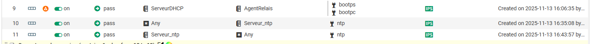
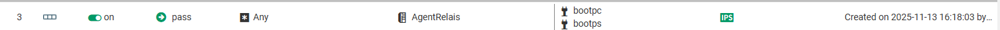
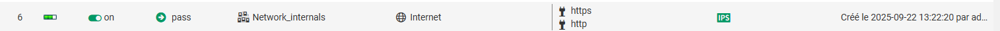
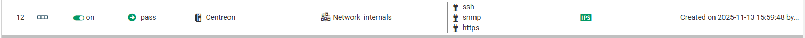

DOCUMENTATION TECHNIQUE : SÉCURISATION VIA PARE-FEU STORMSHIELD (SNS)
Projet : Filtrage applicatif et protection périmétrique CUB
Équipement : Stormshield Network Security (SNS)
Date : Avril 2026
I. PRÉSENTATION DE LA SOLUTION
La sécurité de l'infrastructure Ingolstadt est assurée par un pare-feu Stormshield. Contrairement à un pare-feu classique, Stormshield intègre une analyse IPS (Intrusion Prevention System) sur chaque flux afin de détecter et bloquer les comportements malveillants en temps réel.
II. POLITIQUE DE FILTRAGE (SLOTTING)
La configuration est basée sur une politique de "Whitelist" : tout flux non autorisé est implicitement bloqué. Les règles sont organisées par sections pour une meilleure lisibilité.
1. Accès Administration et Web
Les règles autorisent l'accès sécurisé (HTTPS) vers l'extérieur pour les réseaux internes, ainsi que l'administration du pare-feu lui-même.

Section 1 & 2 : Autorisations vers Internet et flux métiers (DHCP, ICMP)
2. Services Réseau (DNS & Monitoring)
Une section spécifique est dédiée au protocole DNS, assurant la communication entre les résolveurs internes et les serveurs autoritaires, ainsi qu'Internet.

Section DNS et Supervision (Centreon via SNMP/HTTPS)
III. ANALYSE DES RÈGLES CLÉS

Capture de la règle n°3 gérant le trafic DHCP

Capture de la règle autorisant la navigation Web sécurisée

Capture de la règle autorisant le flux de monitoring pour Centreon
IV. PROTECTION IPS & LOGS
Chaque règle active une inspection de sécurité avancée. En cas de détection d'une attaque (ex: scan de ports, injection), le Stormshield bloque automatiquement l'IP source et génère une alerte dans les logs de monitoring.
✅ L'infrastructure est protégée et le routage inter-VLAN est sécurisé.